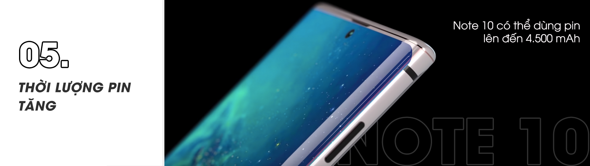

Galaxy Note 10, thế hệ tiếp theo của dòng Galaxy Note sắp ra mắt. Tin đồn ngày càng nhiều, giúp chúng ta mường tượng được sản phẩm mới rõ ràng hơn. Team Tin tức sẽ tổng hợp lại để các bạn biết rõ hơn về flagship mới nhất của Samsung.
Dòng Galaxy Note được Samfans và người dùng yêu thích nhờ có thêm bút S-Pen "thần thánh". Tuy nhiên, đến thời điểm hiện tại thì lại không có nhiều thông tin về S-Pen của Galaxy Note 10.
Thông tin liên quan nhất là ở một bằng sáng chế được cấp gần đây, Samsung tiết lộ một loại camera không dây mới sẽ được tích hợp trong bút stylus. Bút này có một chút tương đồng với bút S Pen nổi tiếng của dòng Galaxy Note 9.
Tin tức này càng được chú ý nhiều hơn sau khi Samsung báo cáo về việc mua lại công nghệ được thiết kế phù hợp với ống kính zoom quang học nằm ngang thân máy.
Những thiết kế khác nhau được giới thiệu trong tài liệu gồm một số ảnh có thấu kính nhìn thẳng ra khỏi đầu bút và bẻ cong ánh sáng đến 90 độ qua lăng kính.
Khái niệm bút có tích hợp camera cũng không quá mới mẻ, nhưng điều làm cho nó trở nên thú vị là thiết bị sẽ có một ống kính zoom quang học cho phép người dùng tập trung vào một vật thể ở xa nhưng không làm giảm chất lượng vốn có của camera thông thường.
Điểm ấn tượng đầu tiên ở Galaxy Note 10 là có thể sẽ có một lỗ khoét tương tự Galaxy S10 để đặt camera selfie, nhưng nằm ở chính giữa thay vì góc phải.
Tin đồn cũng dự đoán Note 10 sẽ sử dụng công nghệ âm thanh tích hợp vào màn hình. Ở mặt sau, máy được trang bị 3 camera xếp theo chiều dọc.
Trên phần khung kim loại, nút kích hoạt trợ lý ảo Bixby và đặc biệt là cổng cắm tai nghe bị loại bỏ - điều có thể sẽ khiến nhiều người dùng hơi hụt hẫng, vì lâu nay Samsung là thương hiệu lớn hiếm hoi còn giữ lại cổng âm thanh 3.5 mm.
Về kích thước màn hình và kích thước tổng thể, Galaxy Note 10 sở hữu màn hình cong 6.3 inch, dùng tấm nền Super AMOLED, có độ phân giải 2K+ (1440 x 3040 pixels) với số đo 162.6 x 77.4 x 7.9 mm.
Trong khi phiên bản Galaxy Note 10 Pro (hay Galaxy Note 10 Plus) sẽ có màn hình 6.75 inch, độ phân giải tương đương và hỗ trợ HDR10+.
Theo một nguồn tin khác, kích thước màn hình của Note 10 – Note 10 Pro lần lượt là 6.4 inch và 6.8 inch. Tất nhiên, cả hai đều có khả năng chống nước theo tiêu chuẩn tối thiểu IP68 như những thiết bị hiện hành.
Về màu sắc, Galaxy Note 10 sẽ bao gồm các phiên bản màu đỏ (hoàn thiện đổi màu dạng gradient), bạc, đen, trắng, và hồng. Nếu vậy, màu tím khá ấn tượng trên Galaxy Note 9 sẽ bị loại bỏ (cũng có thể sẽ bổ sung ra mắt sau).
Galaxy Note 10 sẽ sử dụng chip Snapdragon 855 hoặc Exynos 9820 (tùy thị trường) và dung lượng RAM có thể lên đến 12 GB.
Ít ngày trước, có tin cho rằng mẫu smartphone Samsung mới sẽ là chiếc điện thoại đầu tiên dùng RAM 12 GB chuẩn LPDDR5 cải thiện đáng kể tốc độ truyền tải và hiệu suất tiêu thụ năng lượng so với RAM LPDDR4X.
Bộ nhớ trong tiêu chuẩn của Galaxy Note 10 là 128 GB, còn của Galaxy Note 10 Pro là 256 GB. Dung lượng lưu trữ tối đa sẽ lên đến 1 TB. Tuy nhiên, chỉ Galaxy Note 10 Pro mới có khe cắm thẻ nhớ microSD.
Báo cáo mới cho thấy Galaxy Note 10 series có thể sở hữu 4 camera với 3 ống kính tương tự Galaxy S10+ (cảm biến chính 12 MP, ống tele 12 MP và ống kính góc siêu rộng 16 MP), cái còn lại là cảm biến 3D ToF.
Đặc biệt, camera chính của Galaxy Note 10 sẽ có ba khẩu độ là f/1.5, f/1.8 và f/2.4 giúp người dùng linh hoạt khi chụp trong các điều kiện ánh sáng khác nhau và trường nhìn khác nhau.

Galaxy Note 10 (hoặc ít nhất là Galaxy Note 10 Pro) có thể dùng pin lên đến 4.500 mAh, tăng đáng kể từ con số 4.000 mAh trên Galaxy Note 9.
Máy hỗ trợ sạc nhanh lên đến 25W (hay thậm chí 45W), cải tiến vượt bậc so với công suất 15W của Galaxy S10. Mặc dù vậy, một nguồn tin khác lại cho rằng, cả Note 10 và Note 10 Pro đều chỉ tích hợp pin 4.170 mAh.
Samsung sẽ ra mắt Galaxy Note 10 vào ngày 7/8/2019 tại sự kiện UNPACKED diễn ra ở thành phố New York (Mỹ) theo giờ địa phương và dự kiến lên kệ vào cuối tháng 8 với giá khởi điểm từ 999 euro (khoảng 26 triệu đồng) tại châu Âu.
Ở một số thị trường khác, giá bán của Galaxy Note 10 được dự đoán từ 1.000 đến 1.200 USD. Tuy nhiên, theo "truyền thống" thì giá bán tại thị trường Việt Nam có thể sẽ tốt hơn nhiều.
Bạn dự đoán giá Galaxy Note 10 là bao nhiêu? Bạn kỳ vọng gì ở siêu phẩm mới nhất của Samsung? Cùng chia sẻ dưới phần bình luận nhé!